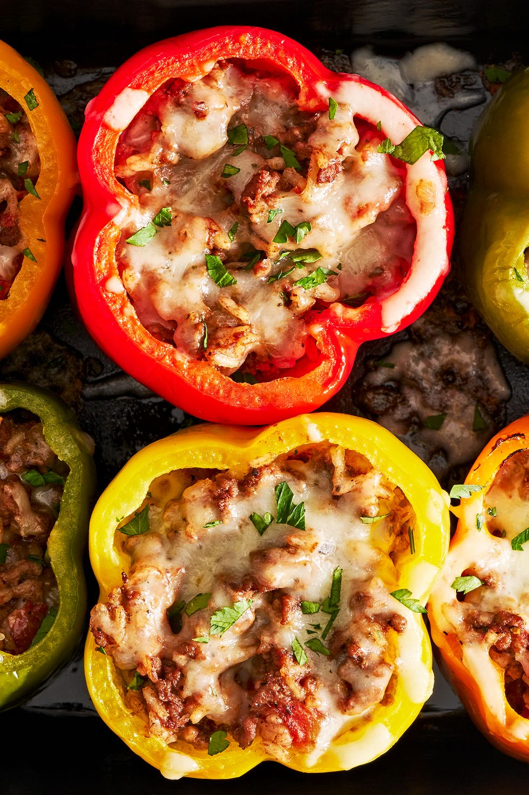

Stuffed Pepper

| Calories: |
419 g |
| Fat: |
26 g |
| saturated fat: |
10 g |
| Cholesterol: |
1 g |
| Sodium: |
767 mg |
| Sugar: |
8 g |
| Protein: |
21 g |
| Calcium: |
209 mg |
Ingredient:
- 1/2 c. uncooked white or brown rice
- 2 tbsp. extra-virgin olive oil, plus more for drizzling
- 1 medium yellow onion, chopped
- 2 tbsp. tomato paste
- 1 lb. ground beef
- 1 (14.5-oz.) can diced tomatoes
- 1 1/2 tsp. dried oregano
- Kosher salt
- 6 bell peppers, tops and cores removed
- 1 c. shredded Monterey jack
- Chopped fresh parsley, for serving
Directions:
-
Preheat oven to 400°.
In a small saucepan,
prepare rice according to package instructions.
-
Meanwhile, in a large skillet over medium heat,
heat oil. Cook onion, stirring occasionally, until softened,
about 7 minutes. Stir in garlic and tomato paste and cook, stirring,
until fragrant, about 1 minute more. Add ground beef and cook,
breaking up meat with a wooden spoon,
until no longer pink, about 6 minutes. Drain excess fat.
-
Stir in rice and diced tomatoes; season with oregano, salt, and pepper.
Let simmer, stirring occasionally,
until liquid has reduced slightly, about 5 minutes.
-
Arrange peppers cut side up in a 13"x9" baking dish and drizzle with oil.
Spoon beef mixture into each pepper. Top with cheese,
then cover baking dish with foil.
-
Bake peppers until tender, about 35 minutes.
Uncover and continue to bake until cheese is bubbly,
about 10 minutes more.
- Top with parsley before serving.